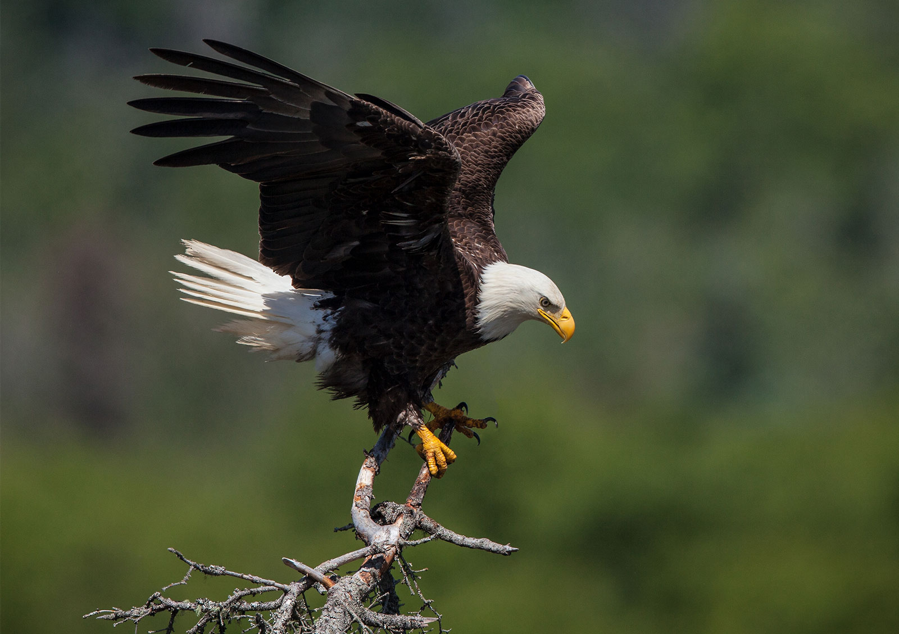

Haliaeetus leucocephalus
The large Bald Eagle has a weight of 3-7 kg (7-15 lb.) and a general size of about 71-96 cm (28-38 in.) The Bald Eagle is one of the largest eagles (or raptors) in the world. It lives near a permanant water source it feeds on ducks, turtles and snakes. They will also eat rabbits, dead animals and muskrats.